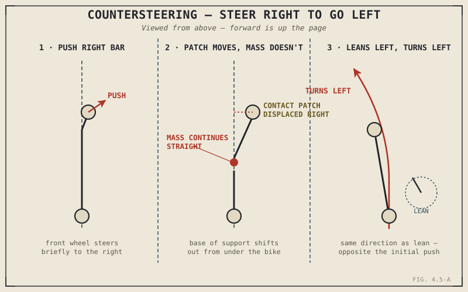

To turn a motorcycle left at any real riding speed, the first thing an experienced rider actually does is push briefly on the right handlebar — steering the front wheel, for a fraction of a second, to the right. This is not a typo, and it isn't a trick reserved for racers. It's how every single rider who has ever taken a motorcycle around a corner above walking pace actually does it, almost always without being consciously aware of doing anything backwards at all.
Chapter 1.2 established that a motorcycle has to lean to turn, and mentioned countersteering only as a term to be explained later. Chapter 4.4 explained how trail passively keeps a rolling motorcycle stable in a straight line. This chapter finally explains countersteering itself: the deliberate, active input a rider uses to break that stability on purpose and initiate a lean.
Steer Right to Go Left
Here's the mechanism. Push the right handlebar forward, and the front wheel briefly turns to the right. At real riding speed, that momentarily steers the front contact patch out from underneath the bike's centre of mass, toward the right — while the mass above, following its own momentum, doesn't instantly follow. With its base of support suddenly displaced to one side, the whole motorcycle begins to fall — specifically, it falls to the left, since its contact patch just moved right out from under it. That fall is the lean, and Chapter 1.2 already established what a leaning motorcycle does next: it turns, in the direction it's now leaning, which is left — the opposite direction from the brief steering input that started the whole sequence.
This is the complete answer to a question Chapter 1.2 left open: leaning isn't something that simply happens to a motorcycle in a corner, and it isn't something a rider waits for a disturbance to trigger. Countersteering is how a rider deliberately manufactures that lean, on demand, using the same "no width to resist a turn any other way" mechanics Chapter 1.2 first described.
You don't steer a leaning motorcycle the way you'd expect. You steer briefly the wrong way, on purpose, specifically to knock the bike off balance in the direction that produces the lean — and therefore the turn — you actually want.

A rider pushing the right handlebar forward, showing the front contact patch displaced to the right while the centre of mass continues its original path, producing a leftward lean that initiates a left-hand turn.
Countersteering Doesn't Stop at Turn-In
Countersteering isn't only the single input that starts a corner — it's a continuous, ongoing conversation between rider and machine for as long as the bike is leaned over. Once the lean is established, the same trail geometry Chapter 4.4 described is constantly working to bring the bike back upright, and small, ongoing countersteering pressure through the corner is what holds the desired lean angle against that self-centering force rather than letting the geometry stand the bike back up prematurely. Standing the bike back up at the corner's exit uses the identical mechanism in reverse: a brief countersteering input in the opposite direction, letting trail's self-correcting tendency, now working with the rider instead of against them, bring the motorcycle back to upright.
Why Almost No One Notices They're Doing It
Chapter 1.4 argued that the rider is embedded directly in the motorcycle's control loop, not standing outside it issuing conscious commands — and countersteering is perhaps the single best illustration of that claim in the entire book. Nearly every experienced rider countersteers on every single turn above walking pace, and the overwhelming majority of them have never consciously registered pushing the "wrong" handlebar to do it. The input is small, brief, and learned so thoroughly through practice that it becomes an unconscious, automatic reflex rather than a deliberate calculation — exactly the kind of deeply embodied, often unconscious control skill Chapter 1.4 said defines the difference between a rider who merely operates a motorcycle and one who's genuinely good at it.
A Common Misconception, Cleared Up Early
The most persistent misconception about motorcycle steering is the simple, intuitive belief that you turn the bars the way you want to go, the way you might expect from a bicycle ridden slowly or a shopping cart. At any real riding speed, this isn't how a leaning, single-track vehicle actually changes direction — countersteering, not direct steering, is what initiates the turn, whether or not the rider is aware of doing it. It's worth being honest about the one genuine exception: at very low speed, such as walking-pace parking lot manoeuvres, there isn't enough speed for the lean-based countersteering mechanism to dominate, and steering behaves much closer to the intuitive, point-the-front-wheel-where-you-want-to-go model most people expect. Above that low-speed range, though, virtually all directional control comes from the countersteering mechanism this chapter has described, regardless of whether the rider could explain it if asked.
Where This Leads
Trail and countersteering together explain most of how a motorcycle balances and turns, but not quite all of it. Chapter 4.6 turns to the last major contributor: gyroscopic effects, the physics of the spinning wheels themselves, and how they interact with everything this chapter and the last one have already described.
Key Concepts to Remember
- Countersteering means briefly steering the front wheel in the opposite direction from the intended turn, which displaces the front contact patch and initiates a lean in the direction the rider actually wants to go.
- This is the active, deliberate mechanism behind Chapter 1.2's claim that a motorcycle must lean to turn — countersteering is how a rider manufactures that lean on demand rather than waiting for it to happen.
- Countersteering continues throughout a corner, holding the desired lean angle against trail's self-centering tendency, and reverses at corner exit to stand the bike back upright.
- Nearly all experienced riders countersteer on every turn above walking pace without consciously realizing it, exactly the kind of embodied, unconscious skill Chapter 1.4 described as defining genuinely skilled riding.
- Direct, intuitive steering does dominate at very low, walking-pace speeds; above that range, countersteering is the actual mechanism initiating every turn, whether or not the rider is aware of it.
Cross-References
| ← Ch. 1.2 | Established that a motorcycle must lean to turn and left countersteering unexplained; this chapter delivers that explanation in full. |
| ← Ch. 4.4 | Explained trail's self-centering tendency; this chapter shows how countersteering both initiates a lean against that tendency and later cooperates with it to stand the bike back up. |
| ← Ch. 1.4 | Argued the rider is embedded directly in the machine's control loop; countersteering's largely unconscious execution is this book's clearest illustration of that claim. |
| → Ch. 4.6 | Covers gyroscopic effects, the remaining major contributor to a rolling motorcycle's stability and steering behaviour. |